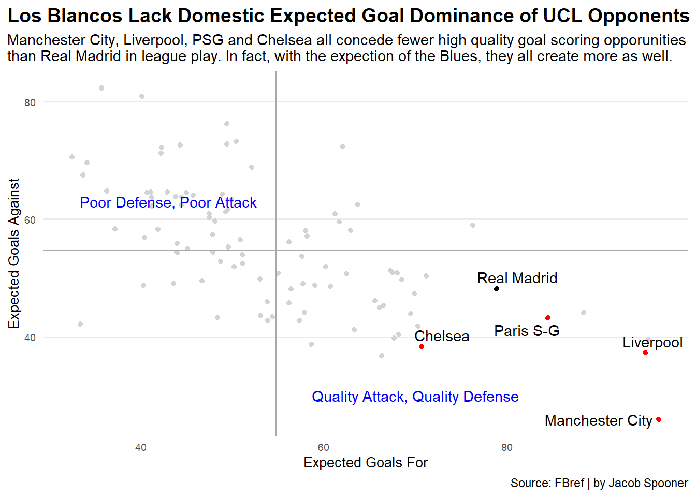

Defying Expectations: Madrid’s Miraculous Road to UCL Glory
madrid
code
analysis
Author
Jacob Spooner
Published
November 6, 2022
Real Madrid’s UEFA Champions League (UCL) triumph last season was a memorable one to say the least. Emerging victorious against the likes of PSG, Chelsea, Manchester City, and Liverpool, labeling this champion as a fluke seems rather harsh.
However, the way in which those matches played out has left many skeptical. Did the stars just happen to align in Real Madrid’s road to glory? With the expected goals data provided by FBref, we will attempt to gain further insight into the baffling nature of Madrid’s ability to get the job done on the biggest stage of them all.
Currently in the football (soccer) analytics world, expected goals is a hot topic that is becoming more and more familiar to your everyday fan. The expected goal value for each shot depends on a mathematical model taking takes multiple events when the shot is taken (such as shot position and attack type).
Thus, the expected goals generated by a team in a given match are calculated by summing up the expected goal value of each shot that team attempts throughout the match. It is worth noting that since expected goals are a subjective metric, the data pertaining to them on FBref might differ from data elsewhere.
Now regarding Real Madrid and expected goals last season, before diving straight into those knockout stage Champions League ties against other European juggernauts, we ought to take a look at how they performed in La Liga (which they won by a landslide by the way).
Particularly of interest is the outcome of matches where the expected goals margin between Los Blancos and its opponents was 0.5 or less. Below are the 11 fixtures in which the expected goals margin was this tight. The green represents Madrid’s actual goal differential in these matches, while the red represents its expected goal differential.
Code
library(tidyverse)library(ggalt)rm_laliga_logs <-read_csv("madrid_laliga_logs.csv")rm_laliga_logs2 <- rm_laliga_logs %>%group_by(Opponent) %>%mutate(xG_Diff = xG - xGA) %>%mutate(GD = GF -GA)close_fixtures <- rm_laliga_logs2 %>%filter(abs(xG_Diff) <0.5)ggplot() +geom_dumbbell(data=close_fixtures, aes(y=Opponent, x=GD, xend=xG_Diff),size =2,colour ="grey",colour_x ="green",colour_xend ="red") +geom_vline(xintercept=0, color="black") +labs(x="Goal Differential",y="Opponent",title="La Liga Champions Outperform Expected Goal Difference in Tight Fixtures", subtitle="Barcelona, Atlético Madrid, Athletic Bilbao, and Levante all fall to league defeats against Real Madrid despite slightly outmatching Los Blancos in this statistic. Only Getafe and Osasuna manage to snatch points off the Kings of Spain in these close affairs.",caption="Source: FBref | by Jacob Spooner" ) +theme_minimal () +theme (plot.title =element_text(size =14, face ="bold"),axis.title =element_text(size =10),axis.text =element_text(size =7),axis.ticks =element_blank(),panel.grid.minor =element_blank(),panel.grid.major.x =element_blank(),plot.title.position ="plot" )
In 9 out of the 11 fixtures with tight expected goal margins, Real Madrid managed to outperform its expected goal differential. Hence, this metric suggests that the club was not as domestically dominant as the final La Liga table indicates (Los Blancos finished 13 points ahead of 2nd place Barcelona).
What about the Champions League? How did Real Madrid’s expected goals stack up against its opponents during the knockout rounds of this competition?
Code
library(waffle)rm <-c("vs PSG"=2, "vs Chelsea"=2.7, "vs Manchester City"=4.2, "vs Liverpool"=0.9, 3.4)vsrm <-c("PSG"=3.5, "Chelsea"=3, "Manchester City"=4.3, "Liverpool"=2.4)iron(waffle( rm*25, rows =10, xlab="Real Madrid's Expected Goals",colors =c("#00529F", "#EE324E", "#FEBE10", "black", "white")) +labs(title="Madrid Survive and Advance in Spite of Fewer Expected Goals", subtitle="Chelsea and Manchester City edge Los Blancos in this metric during the UCL Quarter and Semi-Finals, while PSG and Liverpool display dominance in the Round of 16 and Final.") +theme(plot.title =element_text(size =15, face ="bold"),axis.title =element_text(size =10),axis.title.y =element_blank(),plot.title.position ="plot" ),waffle( vsrm*25, rows =10, xlab="Expected Goals vs Real Madrid\n1 square = 0.04 Expected Goals", colors =c("#ceab5d", "#034694", "#6CABDD", "#c8102E")) +labs(caption="Source: FBref | by Jacob Spooner"))
The waffle chart really says it all. Real Madrid got smoked in terms of expected goals on its run to UCL glory. Somewhat ironically, the ties where Los Blancos was not absolutely demolished (vs Chelsea and Manchester City) were the two that required extra time for Madrid to progress (they defeated PSG and Liverpool in normal time).
Despite this, it is worth keeping in mind that data can be skewed in a few games of a knockout competition. Maybe a comparison of domestic league performance between these European heavyweights would tell a different story. How do Chelsea, Manchester City and Liverpool’s expected goals for and against in the Premier League, and PSG’s in Ligue 1, compare to that of Real Madrid in La Liga?
Code
library(worldfootballR)library(tidyverse)library(ggrepel)leagues <-fb_big5_advanced_season_stats(2022,stat_type="standard",team_or_player="team", time_pause =3)leagues_wide <- leagues %>%select(Squad, Team_or_Opponent, xG_Expected) %>%pivot_wider(names_from = Team_or_Opponent, values_from = xG_Expected)rm <- leagues_wide %>%filter(Squad =="Real Madrid")vsrm_ucl <- leagues_wide %>%filter(Squad =="Paris S-G"| Squad =="Chelsea"| Squad =="Manchester City"| Squad =="Liverpool")averages <- leagues_wide %>%ungroup() %>%summarise(Avg_xG =mean(team), Avg_xG_Against =mean(opponent))ggplot() +geom_point(data=leagues_wide, aes(x=team, y=opponent), color="light grey") +geom_point(data=rm, aes(x=team, y=opponent, label=Squad), color="black") +geom_point(data=vsrm_ucl, aes(x=team, y=opponent), color="red") +geom_hline(yintercept=54.8, color="dark grey") +geom_vline(xintercept=54.8, color="dark grey") +geom_text(aes(x=70, y=30, label="Quality Attack, Quality Defense"), color="blue") +geom_text(aes(x=43, y=63, label="Poor Defense, Poor Attack"), color="blue") +geom_text_repel(data=rm, aes(x=team, y=opponent, label=Squad)) +geom_text_repel(data=vsrm_ucl, aes(x=team, y=opponent, label=Squad)) +labs(x="Expected Goals For",y="Expected Goals Against",title="Los Blancos Lack Domestic Expected Goal Dominance of UCL Opponents", subtitle="Manchester City, Liverpool, PSG and Chelsea all concede fewer high quality goal scoring opporunities than Real Madrid in league play. In fact, with the expection of the Blues, they all create more as well.",caption="Source: FBref | by Jacob Spooner" ) +theme_minimal() +theme (plot.title =element_text(size =14, face ="bold"),axis.title =element_text(size =10),axis.text =element_text(size =7),axis.ticks =element_blank(),panel.grid.minor =element_blank(),panel.grid.major.x =element_blank(),plot.title.position ="plot" )

Once again, Real Madrid falls short of these other clubs. While Los Blancos may have taken home the most prestigious prize in world football, arguably the hottest topic in football analytics implies that this team was not Europe’s finest. It could be that the brilliance of Karim Benzema at one end and Thibaut Courtois at the other serve as an explanation for the over performance pertaining to expected goals for and against.
At the end of the day though, it is difficult to dismiss the potential role of luck in a few one off Champions League ties in a fluid sport where goals are hard to come by, and are often the result of countless factors culminating at the right moment.
Will the luck dry up this season? Expected goals data seems to indicate so.